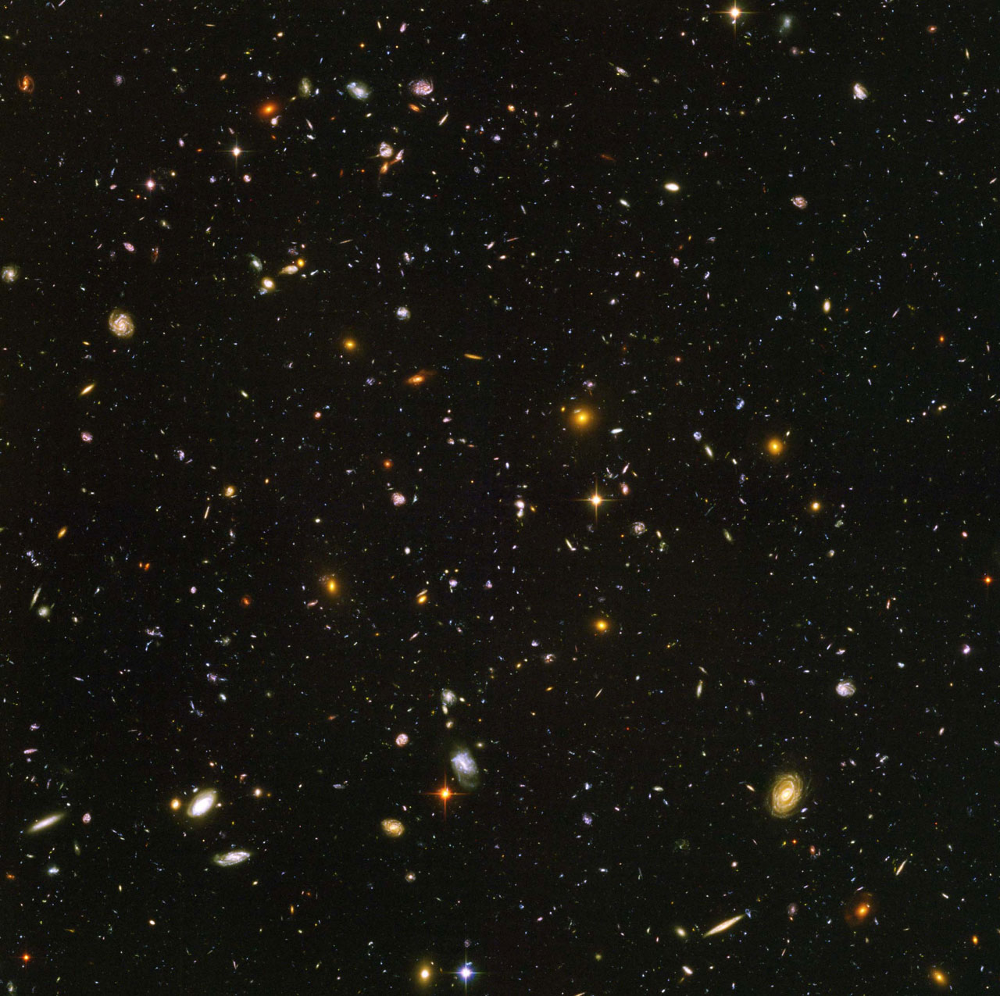

On this page are some links that are fun, or useful, or both.
N Is A Number A documentary about Mathematician Paul Erdos.
Graham's Number A Numberphile video about an amazingly large number.
The Proof. A NOVA documentary about Andrew Wiles and Fermat's Last Theorem.
Mr. W
Feynman - Fun to Imagine
Parasitic Wasps (fascinating, but not for the faint of heart)
Gas Dynamics in a 4 Stroke Engine Cylindar
Ferrofluid
Carl Sagan's Pale Blue Dot
-
A zoom into the mandelbrot set. (Warning: Music autoplay.)
-
-
A zoom into a 3d version of the Mandelbrot set, sometimes called the
Mandelbulb.
-
-
A one-hour Nova documentary of fractals. This is the movie that got me
into math!
-